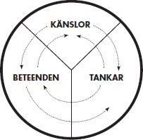
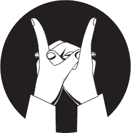

Om människor definierar situationer som verkliga,
är de verkliga till sin konsekvens.
William Isaac Thomas
Sandra hade under en lång tid lidit av tvångstankar. Hon hade alltid varit noggrann med att känna på handtaget en extra gång för att kontrollera att dörren var låst. I samband med att stressen på jobbet blev allt värre tilltog kontrollbeteendet och till slut hade det hela gått så långt att hon knappt vågade lämna hemmet i rädsla för att hon skulle glömma att stänga av spisen, låsa dörren eller lämna strykjärnet på. I de fall då hon faktiskt lyckades ta sig ut, krävdes det timlånga kontrollrundor i lägenheten för att kontrollera att alla ”farliga” saker i hemmet faktiskt var avstängda.
Tankar, känslor och handlingar påverkar varandra. Sandras tankar om vad som kunde hända om hon faktiskt lämnade spisen på (omedveten katastrofbild) påverkade känslan (obehaget) som i sin tur påverkade beteendet (kontrollrundor och undvikande att gå ut för att bli av med obehaget).
Utgångspunkten i den så kallade helhetsmodellen är att våra tankar, känslor och beteenden påverkar varandra.
Ibland kan vi hamna i en negativ spiral där vi tänker en negativ tanke som automatiskt följs av en negativ känsla och eftersom vi i högre grad styrs av våra känslor än av vårt förnuft riskerar detta att resultera i ett negativt beteende. På samma sätt kan ett beteende påverka hur vi känner och tänker. Om vi medvetet väljer att le ett stort leende känner vi oss till exempel gladare och kan tänka gladare tankar.
Självklart kan vi inte undvika att ibland råka ut för negativ upplevelser, ibland misslyckas vi helt enkelt. Om sådana händelser gör att du fastnar i en negativ spiral, kan du enkelt vända spiralen genom att ändra hur du tänker.

Bilden illustrerar den så kallade helhetsmodellen – en modell som hjälper oss att förstå våra beteenden och varför vi gör som vi gör.
Ofta kan det vara mer effektivt att förändra någon av de andra delarna än den där du upplever ett problem. Om du till exempel har problem med att du känner på ett visst sätt, kanske det är tankarna du ska ändra och om du har problem med ett beteende, kan du behöva ändra dina känslor och så vidare. Genom att bli medveten om våra tankar, känslor och beteenden kan vi hitta alternativa sätt att tänka, känna och bete oss när det behövs. Låt oss börja med att titta närmare på våra känslor.
KÄNSLOR – ANVÄNDBARA OCH FARLIGA
Inom forskningen är man ännu inte riktigt överens om exakt vad känslor är och hur de ska klassificeras, men man skiljer i regel mellan emotioner, som glädje eller sorg, och drifter, som hunger eller sexualdrift.
Den världsberömde professorn Paul Ekman har identifierat ett antal emotioner som är universella och vars ansiktsuttryck också är lika, oberoende av kultur. Dessa är rädsla, ilska, sorg, avsky, förakt, förvåning och glädje. Av dessa är glädje den enda rent positiva emotionen, förvåning neutral och övriga uppfattar vi som negativa. Förutom dessa känslor, vars ansiktsuttryck är universella, finns ytterligare ett antal känslor som till exempel skuld, skam, belåtenhet, stolthet, förväntan och tillit. En populär teori är att mer komplexa känslor som till exempel kärlek är en kombination av fler emotioner och ibland även drifter.
Enligt den världsberömde coachen Anthony Robbins utgår undvika sådant som är farligt och försöka få mer av sådant som får oss att må bra.
HALLELUJA
En viktig aspekt som påverkar våra känslor är vårt kroppssprk Och lika mycket som våra känslor påverkar vår kropp» påverkar vår kropp våra känslor. Föreställ dig till exempel en djupt deprimerad person – hur den personen tänker och rör sig, vilken kroppshållning personen har. När du tänker på det sättet kan du säkert till viss grad känna den personens känslor.
Prova nu att stå upp, titta uppåt, sträck armarna mot himlen och le ett stort leende samtidigt som du försöker känna dig deprimerad. Det går inte att känna sig nedstämd i denna position. Sedan kan du kanske inte gå runt i stan med armarna sträckta mot himlen, men bara det faktum att du bestämmer dig för att le kommer att göra dig gladare. Man har till och med provat detta på deprimerade patienter som tvingades att le tjugo minuter om dagen. Vissa hade så svårt för detta att de fick pressa upp mungiporna med händerna, men efter en vecka rapporterade en stor majoritet att de mådde bättre. Många hade också börjat le frivilligt.
Så le oftare och du kommer att bli gladare. Det behöver inte ens vara ett äkta leende, hjärnan tror i alla fall att du mår bra. Och om du tror att du är glad så är du det. Allt annat vore absurt.
Alla känslor fyller sin funktion i rätt sammanhang, även sådana som vi normalt klassar som negativa. Det finns tillfällen när vi ska vara rädda, det finns tillfällen när vi ska vara arga och det finns tillfällen när vi ska vara ledsna. Problemet är att vårt omedvetna lär sig slumpmässigt och ibland fastnar vi i en känsla utan att det rent logiskt är befogat.
Innan vi går vidare ska vi titta närmare på några av de emotioner som kan ställa till problem. Genom en förståelse för hur våra känslor fungerar kan vi enklare förstå hur vi kan ändra dem.
Ilska – en farlig energiinjektion
Ilska kan uppstå av ett antal olika anledningar. Om någon eller något hindrar dig att göra det du vill eller att uppnå ett mål kan det skapa ilska. Många gånger är ilskan ologisk, människor kan bli arga på trafikljuset som är rött. Om du blir attackerad fysiskt eller verbalt kan det skapa ilska och om någon gör eller säger något som går tvärt emot dina värderingar kan det skapa ilska.
I rätt sammanhang är naturligtvis ilska en viktig emotion. Den ger dig kraft och energi. Den kan hjälpa dig att övervinna en fiende eller få dig att kämpa mot orättvisor och annat som du anser vara fel. Många människor drivs av ilska och kan gilla känslan av att vara riktigt förbannad eller bara irriterad.
Vanligare är dock att vi känner ilska när den inte tillför något. Jag har haft många klienter som hamnat i negativa spiraler där de i vissa sammanhang blir arga trots att de rent logiskt vet att det inte är en konstruktiv känsla i sammanhanget.
Sorg – något är förlorat
Sorg är en emotion som kan variera från total förtvivlan till att bara känna sig ”lite nere”. Ofta är sorg en reaktion på en förlust av något slag. Ibland kan människor fastna i sorg eller nedstämdhet. Då handlar det ofta om negativa spiraler där det enklaste sättet att ta sig ur är att identifiera de tankeloopar som skapar känslan och sedan ändra hur man tänker dessa tankar.
Rädsla – att undvika och överleva
Rädsla är kanske vår allra viktigaste emotion. Den får oss att undvika och, i bästa fall, bekämpa sådant som är farligt. Men rädsla är också den emotion som ställer till mest problem. Orsaken är att vi omedvetet lär oss vad vi ska vara rädda för och den inlärningen har sällan med logik att göra. Fler människor är rädda för att prata inför en grupp än det antal som är rädda för döden.
Även om rädsla är en viktig emotion som hjälper oss att undvika faror så leder den ofta till dåliga beslut. Vi har lätt för att skrämma upp oss själva och andra med sådant som är skrämmande eller okänt. I värsta fall kan det få katastrofala följder som krig och våld.
Att ha rädslor som drivkraft har också nackdelen att vi tappar vår drivkraft när vi undkommit faran. Om du i stället använder lust som drivkraft vill du bara fortsätta och ha mer, för det tycks inte finnas någon övre gräns för hur bra du kan må. Och jag är övertygad om att vi allt för mycket styrs och hindras av rädslor – ofta helt onödiga sådana. Vi kanske stannar kvar på en arbetsplats trots att vi inte trivs, eller i ett förhållande som inte längre fungerar. Ofta av den enda anledningen att vi är rädda för det okända. Kanske är vi rädda för att misslyckas, för att göra bort oss, för vad andra ska tycka eller helt enkelt för att senare ångra oss. Man vet vad man har, men inte vad man får.
Om du i stället kunde släppa alla onödiga rädslor skulle du vara fri. Fri att följa dina drömmar, satsa på det du verkligen vill och uppnå din fulla potential.
Visst finns det sådant vi ska vara rädda för och visst finns det tillfällen då vi ska vara försiktiga. Men oftast hindrar vi oss själva i onödan. I kommande kapitel kommer du att få lära dig att släppa onödiga rädslor och onödig oro. Du kommer också att få lära dig att utnyttja de känslor du har mest nytta av i specifika situationer. Det är väldigt enkelt när du väl vet hur du ska göra.
Oro – en rädsla för framtiden
Jag hade en klient som var en framgångsrik violinist. Hans problem var att han alltid oroade sig inför sina konserter. Han kunde spendera veckor innan en konsert med att oroa sig och må dåligt. I trance kom vi dock fram till att oron hade en viktig funktion. Den fick honom att öva och repetera väldigt mycket och var förmodligen en del i hans framgångar. När vi förstod detta kunde vi ersätta oron som drivkraft med lust och glädje. För naturligtvis ville han fortsätta att repetera lika flitigt men samtidigt slippa oron. Jag fick honom att sikta mot den sköna känslan av att spela perfekt och få publikens och kollegornas uppskattning.
Oro har alltså, som allt annat vi kan göra, en positiv funktion. Om jag står på balkongen på sjunde våningen och funderar på att promenera lite på balkongräcket är det ganska bra att jag kan oroa mig för vad som skulle hända om jag ramlade ner, vilket förmodligen får mig att stanna innanför räcket. Oro är till för att varna oss för sådant som kan gå fel så att vi kan undvika faror. Men tyvärr oroar vi oss ofta i onödan. Antingen för sådant som vi ändå inte kan göra något åt, eller för sådant som inte spelar någon roll. Vår hjärna scannar alltid efter potentiella faror. Det mesta sorteras bort som ovidkommande, men ibland får hjärnan för sig att något är viktigt. Problemet är att detta inte är en medveten process så vi har svårt att välja vad som ska uppfattas som viktigt.
Glädje – det viktiga skrattet
Glädje är den mest positiva emotionen och skratt är ett av de viktigaste elementen i coachningsarbetet. Om jag använder humor och får en klient att skratta är det enkelt att skapa nya perspektiv och lämna gamla mönster.
Andra positiva känslor som ligger nära glädje men som ofta handlar om fysiska sensationer är till exempel upphetsning, njutning och lust.
TANKAR – NAVIGERAR OSS I VÄRLDEN
Låt oss börja med ett enkelt experiment: Knäpp händerna ganska hårt och håll ut båda pekfingrarna enligt figuren.

Se till att det är en till två centimeter mellan fingertopparna. Fortsätt att titta på fingertopparna medan du tänker dig att de är två magneter. Magneter som dras närmare och närmare varandra.
Även om du i denna övning får extra draghjälp av det faktum att vi normalt behöver använda en aning muskelkraft för att hålla isär fingrarna, så visar den ändå på ett viktigt faktum: Alla våra tankar får utslag i vår kropp. Det kallas för ideomotorisk respons och även om detta fysiska utslag många gånger är så litet att det inte märks har det stor betydelse för vad och hur du tänker.
Vi kan använda våra fem sinnen för att direkt uppleva omvärlden. Just nu kan du se denna text, du kanske hör något ljud, lägger märke till temperaturen där du befinner dig och så vidare. Detta kallas att du använder dina sinnen externt, alltså att du upplever den direkta omvärlden med dina sinnen.
KONSTRUKTIVA TANKAR
Det var första gången jag skulle åka själv i skidliften. Det var en så kallad bygellift där du har en bygel runt ryggen som drar dig uppför backen medan du står på dina skidor. Pappa åkte tillsammans med min lillebror ett par byglar framför mig. Det var brant uppför och liftspåret gick mitt i skogen, långt från själva backen. Plötsligt råkade jag få skidorna i kors. Jag ramlade, tappade bygeln och började kana nerför backen. Jag tänkte ”nu är det kört, jag kommer inte att hitta tillbaka till backen och jag kommer att frysa ihjäl i en snödriva”.
Även om jag bara var ett barn insåg jag snabbt att dessa tankar inte hjälpte mig och plötsligt började jag tänka på ett nytt sätt. Det var inte viljestyrt utan tankarna kom bara. ”Fredrik, du klarar det här. Hasa bara ner till stället där det inte är lika brant. Sedan kan du långsamt ta dig snett nedåt och närmare backen. Därifrån hittar du.”
De nya tankarna hjälpte mig att klara av en situation som jag upplevde som farlig. Jag har många gånger efter denna händelse haft nytta av att kunna välja att tänka på det sätt som bäst hjälper mig i olika situationer.
Du kan också använda dina sinnen i fantasin och till exempel tänka på hur en ros ser ut, hur din favoritmusik låter, eller hur choklad smakar samtidigt som du funderar på all nytta du kommer ha av denna bok. Du använder då dina sinnen internt.
Ofta föredrar vi ett sinne som vårt huvudsystem för att skapa vår karta av omvärlden. En del människor föredrar att använda synen internt, andra känseln och många pratar med sig själva. Lukt eller smak är däremot sällan ett huvudsystem.
Oavsett vilket som är ditt huvudsystem kan du ändå använda alla sinnen för att tänka. Om du är en person som alltid för en inre dialog kan du ändå föreställa dig hur något ser ut eller känns. Om du är en person som alltid tänker med synen kan du ändå prata med dig själv i dina tankar. Våra interna sinnen är alltså: Synen, hörseln, känseln, doften och smaken. Inom NLP använder vi termerna:
V =Visuellt för syn
A = Auditivt för ljud
K = Kinestetiskt för känsel
O = Doft (från latinets olfaktorisk)
G = Smak (från latinets gustatoriskt)
Med hjälp av våra tankar navigerar vi i världen och oftast är det våra tankar som styr våra beteenden.
LÄR DIG KONTROLLERA DINA BETEENDEN
Tänk om du fullt ut kunde kontrollera dina beteenden. Om du kunde bestämma hur du vill göra i varje situation. I stället för att reagera enligt gamla invanda mönster skulle du kunna bestämma själv. Hur skulle det hjälpa dig att ha ett fantastiskt liv? Och jag talar inte om karaktär eller att tvinga sig själv att göra på ett visst sätt. Vi får ofta höra att vi bör kontrollera våra beteenden, men sällan hur vi genomför detta.
Jag hade en ung tjej som inte kunde slänga något som klient, hon till och med torkade bananskal och sparade dem. Hennes lägenhet var full av skräp som hon inte kunde göra sig av med. Detta var naturligtvis ett beteende som hon ville slippa. I trance tog vi reda på vilka tankar som styrde beteendet och det visade sig att hon var rädd för att viktiga saker skulle följa med om hon slängde något. Hon förstod att detta var ologiskt men kunde ändå inte låta bli att tänka på det sättet. När hon under hypnos lärde sig släppa den tanken kunde hon ändra sitt beteende och slänga allt skräp hon samlat på sig.
Ett sätt att ändra omedvetna beteenden är att ändra på de tankar och känslor som styr beteendet. Men hur är det då med medvetna beteenden? En rökare är ju till exempel medveten om att han röker, och kan uppfatta detta som ett stort problem, men ändå ha svårt att sluta.
Många klienter tror att jag ska få dem att tycka illa om det de vill sluta med, att hata lukten av cigaretter eller må illa vid tanken på choklad. Visserligen går det att göra på det sättet och i vissa fall kan det vara effektivt. Men oftast är det bättre att gå i riktning mot en bra känsla och att ge klienten bråkdelen av en sekunds betänketid. De handlingar som vi upplever som medvetna sker oftast ändå omedvetet av vana. De flesta personer som biter på naglarna kan många gånger komma på sig själva med fingrarna i munnen och när de redan börjat bita är det liksom lika bra att fortsätta och bita färdigt.
Nu när du förstår de mekanismer som ligger till grund för våra beteenden är det hög till att göra något åt det. I nästa kapitel tar jag dig med på en inre resa och du får verktygen som hjälper dig att hitta just ditt ideala prestationstillstånd – ett tillstånd av trance.
HISTORISKA FÖR-GRUNDSGESTALTER
Det finns många personer som bidragit till att utveckla hypnosens historia. Här är några av de viktigaste:
Franz Anton Mezmer (1734–1815)
Den moderna hypnosen började med Mezmer. Detta var innan termen hypnos hade myntats och Mezmer kallade sin metod för animal magnetism. Han hade en teori om att magnetfält kunde bota sjukdomar och lät grupper av patienter hålla i metallstänger nedsänkta i ett vattenbad med glas och järnfilspån. Under behandlingen spelades avslappnande musik i bakgrunden, ljuset var dämpat och Mezmer gick mellan sina patienter, strök med händerna över dem och mumlade suggestioner om tillfrisknande. De positiva resultaten var häpnadsväckande och han blev mycket populär bland överklassen i Paris. Hans popularitet ledde, inte oväntat, till avundsjuka och den franska vetenskapsakademien tillsatte en granskande kommission som skrev en starkt kritisk rapport och Mezmer tvingades överge sin praktik.
James Braid (1785–1860)
En skotsk kirurg som blev intresserad av Mezmers metoder och förklarade fenomenet i mer vetenskapliga termer. Han visade också att magneter inte behövdes utan att det mycket väl räckte med verbala suggestioner. Det var Braid som myntade termen hypnos.
James Esdaile (1808–1859)
Kirurg som i Indien gjorde hundratals kirurgiska ingrepp med hypnos som enda smärtlindring. När han återvände till England för att presentera sina resultat blev han motarbetad och nästan ingen tyckte att hans metoder behövdes eftersom kemisk narkos hade börjat användas.
Émile Coué (1857–1926)
Fransk pionjär inom självsuggestion som blev berömd för orden: ”Varje dag och på alla sätt blir jag bättre och bättre.” Han menade att vi genom att upprepa sådana ord för oss själva kunde uppnå en positiv förändring. I Sverige blev frasen extra berömd genom Ernst Rolfs kuplett ”Bättre och bättre dag för dag” – en parodi på Coués metod.
Clark L. Hull (1884–1952)
Amerikansk psykolog som med sitt verk Hypnosis and suggestibility åter gav hypnosen ett uppsving.
Milton H. Erickson (1901–1980)
Han har kallats den moderna hypnosens fader. Erickson hade polio och blev i övre tonåren förlamad och sängliggande i månader. Under denna period studerade han hur människor kommunicerade och han fascinerades över hur de kommunicerade inte bara med ord utan ofta i ännu högre grad med tonfall, meningsbyggnad och kroppsspråk. Han förbluffades över hur ofta kroppsspråket stod i kontrast mot orden. Erickson kom senare i kontakt med Clark L. Hulls arbete och började praktisera hypnos. Han jobbade bland annat med metaforer och blev berömd, främst för att han nådde fantastiska resultat med sina patienter.
Richard Bandier (1950–)
Studerade tillsammans med sin kollega John Grinder framgångsrika terapeuter för att ta reda på vad dessa gjorde som gav resultat. De studerade familjeterapeuten Virginia Satir, gestaltterapins grundare Fritz Pearls och framför allt Milton H. Erickson. Genom att systematisera deras metoder kunde de ta fram modeller för lyckat terapiarbete. De kallade sin metod för NLP – en metod som sedan dess har utvecklats och används inom många olika områden. Efter Milton Ericksons död blev Bandler utnämnd till världens främste nu levande hypnotisör.
Paul McKenna (1963–)
Engelsman som med sina tv-shower på nittiotalet åter populariserade hypnos i underhållningssyfte. Han studerade senare NLP för Richard Bandler och har bland annat skrivit ett antal självhjälpsböcker baserade på hypnos och NLP. Mest känd är bästsäljaren Jag kan göra dig smal.
Derren Brown (1971–)
Populär för sina tv-program där hypnos och suggestion ofta ingår som metoder för att påverka andra människor. Även Brown har studerat för Richard Bandler.
Georg Swallinger (1904–1960)
Mycket populär underhållare på fyrtiotalet som turnerade med sin suggestionsföreställning Människor och myror. Han blev vid ett flertal tillfällen anmäld för ”olaga estradhypnos” och vid enstaka tillfällen dömd till dagsböter.
Rolfino (1934–2009)
Sveriges siste turnerande scenhypnotisör som var mycket populär under 70- och 80-talet. Liksom många av föregångarna kallade han sin underhållning för suggestion för att undkomma åtal. Han blev anmäld ett flertal gånger och någon gång dömd till böter. Detta gav emellertid god publicitet och med största sannolikhet gynnande det honom. Rolfino var den hypnotisör som inspirerade mig till att börja med scenhypnos och vi hade ofta kontakt.
Ture Arvidsson (1922–)
Psykiatriker som på sextiotalet introducerade hypnos som metod för rökavvänjning. Arvidsson har varit överläkare vid Danderyds sjukhus, alkoholläkare och chef för Stockholms läns rökavvänjningsklinik.
Lars-Eric Uneståhl (1938–)
Leg. psykolog och fil.dr i psykologi som forskat en hel del om hypnos. Har också studerat idrottspsykologi och utvecklat mental träning.